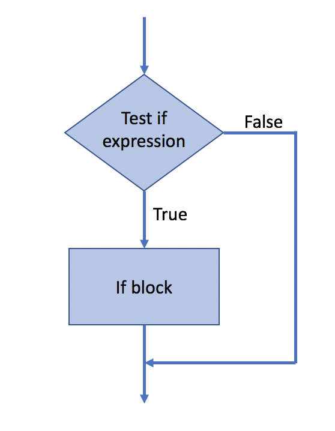
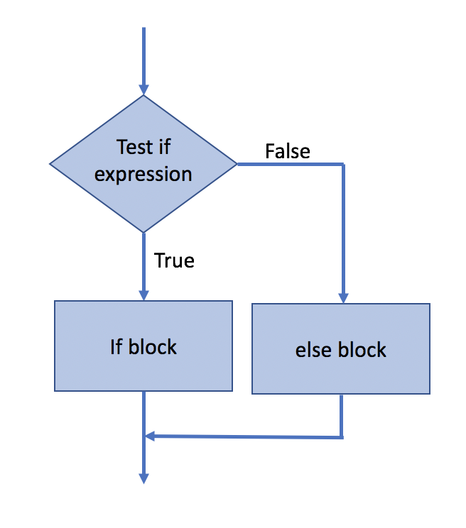
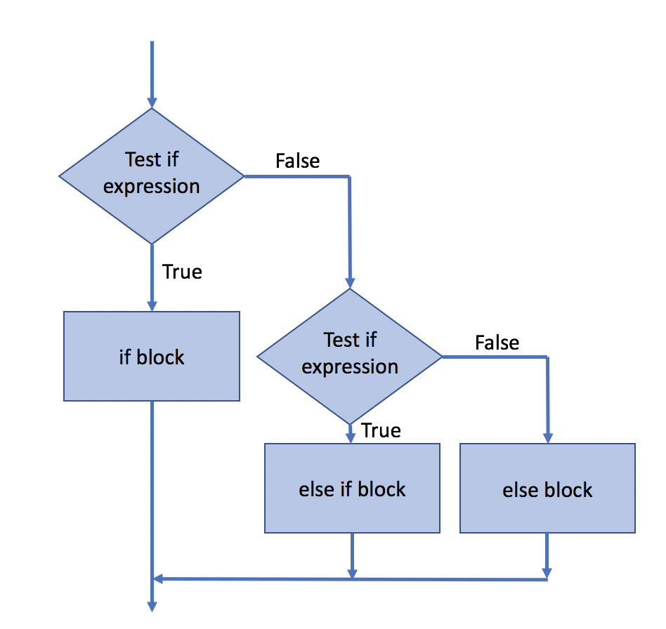

5.1 Loops and Conditionals¶
Outline:
Iterating with
fororwhileloopsExiting a loop with
breakandcontinuestatementsConditional
if,elif,elsestatements
Additional Assigned Reading¶
Data 8 textbook “Computational and Inferential Thinking: The Foundations of Data Science” By Ani Adhikari and John DeNero Chapter 9 Randomness. This should overlap with your assigned reading for Data 8.
For Loops¶
Watch this tutorial video:

For loops can be used to iterate over the elements of a list or array. The syntax for the loop is started with for element in list_name: where element is a variable name you choose and list_name is the object you want to interate through. Then the code you want to perform within the loop is indented 4 spaces.
import numpy as np
for i in np.arange(0,5):
print(i)
0
1
2
3
4
It’s often necessary to initiate i.e. preset variables or arrays you plan to use in your loop. You want arrays to stay the same dimensions and size, and in general you should know the value of the variable before you iterate over it.
# two methods for summing all the elements in a list and an example with setting an array
total=0
total2=0
squares=np.zeros(5)
for i in np.arange(0,5):
total = total + i
total2 += i
squares[i]=i**2
print(total,total2,squares)
10 10 [ 0. 1. 4. 9. 16.]
While Loops¶
while loops will repeat as long as the condition you set is True. You need to be careful that you are not setting up an infinite loop with a condition that will never be False.
count = 0
while count < 5:
print(count)
count += 1
0
1
2
3
4
Continue and Break Statements¶
continue will exit the current loop iteration you are in and skip to the next loop step.
# Print out only odd numbers
for x in range(12):
# check if x is even, divides by 2 with no remainder
if x % 2 == 0:
continue
print(x)
1
3
5
7
9
11
break can be used to exit a for or while loop.
# Sum odd numbers and Print out only until the sum is less than 50
total = 0
for x in range(50):
# check if x is even, divides by 2 with no remainder
if x % 2 == 0:
continue
if total > 50:
break
total = total + x
print(x,total)
1 1
3 4
5 9
7 16
9 25
11 36
13 49
15 64
If, elif, else Statements¶
if statements, like loops, are used to control the flow of your code. You write a conditional if statement, and if it is met then the indented code within the if block will be executed.

# simple code to test if a number is positive
num = 5
if num >= 0:
print('Num is positive or zero!')
Num is positive or zero!
But if the if condition is not met, nothing happens. You can set what happens if the if condition is not met with an else statement.

# simple code to test if a number is positive
num = -5
if num >= 0:
print('Num is positive or zero!')
else:
print('Num is negative. :(')
Num is negative. :(
You can build mulitple conditions into you logic tree with if, elif (which stands for else-if), else statements.

# code to test if a number is positive
num = 0
if num > 0:
print('Num is positive.')
elif num < 0:
print('Num is negative.')
else:
print('Num is zero.')
Num is zero.